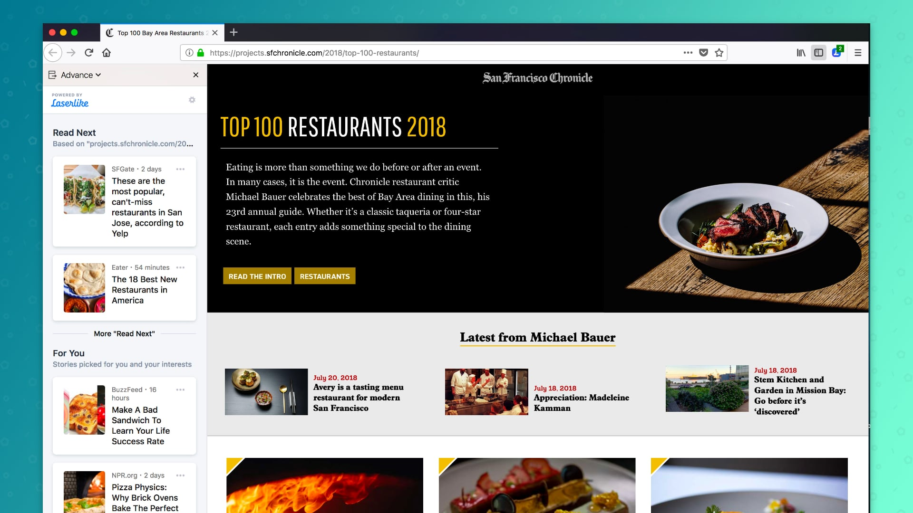

Mozilla оголосила про випуск тестового розширення для браузера Firefox під назвою Advance. Воно призначене для видачі рекомендацій сайтів і статей на основі активної вкладки або історії браузера.
Особливості Advance
Інтерфейс розширення виводиться на бічну частину браузера. У розділі "Read Next" показуються рекомендації, засновані на контенті у відкритій вкладці. Розділ "For You" складається з порад на основі історії відвіданих сайтів. Від нецікавого контенту можна відмовитися, а на заборонений поскаржитися.
Для підбору цікавих сайтів і статей використовується система машинного навчання Laserlike. Вона отримує доступ до історії браузера тільки після встановлення розширення. За необхідності користувачі можуть подивитися доступні йому дані та видалити їх.
Розширення випущено в рамках програми Test Pilot, що дає змогу оцінити експериментальні можливості Firefox. У червні 2018 року в неї було додано функції зміни кольору інтерфейсу й одночасного перегляду двох вкладок.